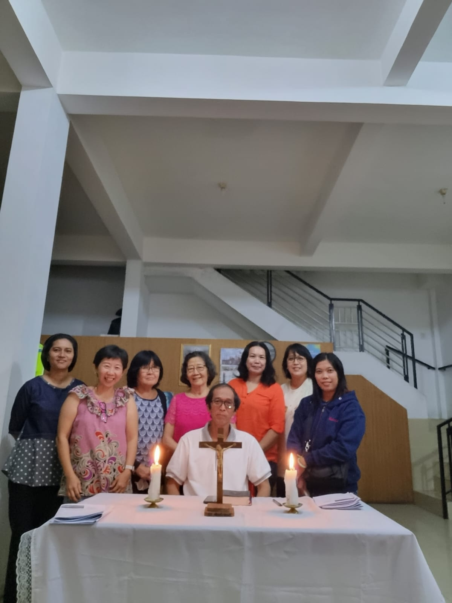
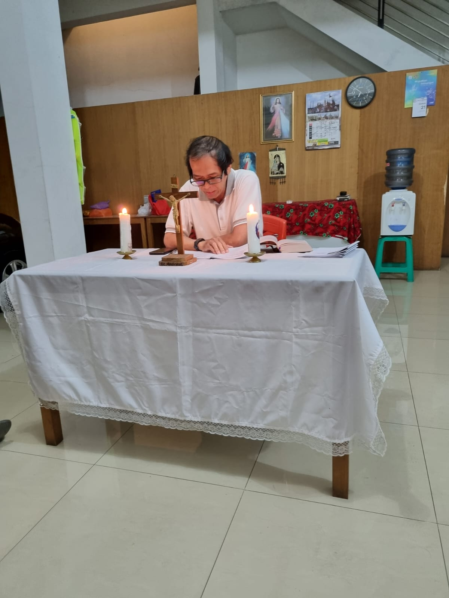

Penyegaran Rohani Kebangsaan dan doa Rosario ke 2
|  |  |
Pada pertemuan ke 2 ini , kita diajak untuk merefleksikan manfaat kehadiran media sosial (medsos) di tengah masyarakat, khususnya dalam menghadapi Pemilu Serentak tahun 2024. Medsos memberi banyak manfaat untuk menunjang kehidupan kita. Disisi lain juga memberikan dampak buruk, memecah belah bangsa, bahkan pidana bila salah dalam menggunakan. Dalam konteks Pemilu medsos menjadi gerbang utama informasi untuk mendapatkan pemimpin yang akan kita pilih.
Pemeriksaan Batin
P: Tuhan, pandanglah kami yang berhimpun di sini. Kami mau mempersiapkan Pemilu Serentak tahun 2024. Kami akan mewujudkan diri 100 persen Katolik dan 100 persen Indonesia.
U: Dalam Khotbah di bukit, Tuhan Yesus menegaskan bahwa kita adalah garam dan terang dunia. Maka kami sebagai putra-putra-Mu dipanggil sungguh-sungguh mau melibatkan diri dalam masyarakat sebagai bentuk amalan kami. Kami pun ingin terlibat dalam kegembiraan dan harapan, duka dan kecemasan masyarakat.
P: Tuhan Yesus, Engkau telah berkenan mengutus para rasul pergi berdua-dua. Kini Engkau pun mengutus kami pergi di tengah masyarakat mewartakan kabar suka cita.
U: Kemajuan teknologi informasi yang ditandai dengan hadirnya berbagai macam mendia sosial, memanggil kami untuk cerdas dan bijak menggunakan medsos agar menjadi sarana pemersatu masyarakat, khususnya menghadani Pemilu 2024
P: Pemilu aman, damai dan tanpa adanya polarisasi dalam masyarakat menjadi modal sosial membangun bangsa dan negara menuju masyarakat yang adil dan makmur sesuai dengan kehendak-Mu.
U: Teguhkanlah semangat kerasulan kepada kami. Dengan demikian, hidup kami semakin berguna bagi banyak orang.
Cerita inspiratif : Ayam vs Rubah
Suatu ketika, hiduplah seekor ayam di sebuah pedesaan. Ayam ini sangat rajin, setiap pagi ia tak pernah lupa untuk berkokok dan membangunkan tuannya.
Suatu hari, ayam ini sedang beristirahat di dahan pohon yang cukup tinggi. Seekor rubah kebetulan lewat di situ dan ia sedang sangat lapar. Ia memutuskan untuk menipu ayam tersebut.
“Hai, ayam! Aku baru saja membawa kabar gembira dari surga! Ada perintah baru dari Allah bahwa semua binatang harus bersahabat! Sekarang semua jenis hewan harus hidup dalam kerukunan,” begitu ujar rubah.
Dengan kaget, sang ayam pun bertanya, “Benarkah?” Rubah pun menjawab, “Tentu saja! Aku barusan mendapatkan kabar ini langsung dari Allah! Jadi, maukah kamu berteman denganku? Ayo turun ke sini!”
Sang ayam langsung berpikir dengan bijak. Ia pun menjawab, “Tentu aku mau berteman denganmu, rubah. Tapi bagaimana bila kita tunggu beberapa saat? Sekelompok teman kita akan datang juga.” Rubah ini bertanya dengan kaget, “Teman? Siapa teman yang kamu maksud?”
Ayam ini berkata, “Ada sekawanan anjing hutan yang akan datang. Sebentar lagi pak tani juga akan lewan dengan domba-dombanya.” “Tentu lebih banyak teman akan lebih meriah, bukan?” lanjut sang ayam. Dengan geram. Rubah pun akhirnya pergi karena ia sadar sang ayam tidak tertipu oleh kebohongannya.
Kesan cerita
Pemandu mempersilahkan para peserta untuk memberi kesan/komentar/reaksi spontan atas cerita di atas.
a. Apa kesan Anda mendengarkan cerita “ayam vs rubiah?
b. Apa pesan moral yang mau disampaikan dari cerita ini?
c. Apakah Anda melihat, menemukan peristiwa/kejadian di seputar masyarakat kehidupan berbangsa?
Pesan Moral: jangan mudah percaya pada sesuatu yang tidak ada bukti atau dasarnya. Selalu bersikap cerdik dalam setiap saat.
Membaca dan Belajar Kasus Roy Suryo
Roy Suryo Divonis 9 Bulan Penjara Kasus Meme Stupa Borobudur Jokowi
Jakarta, CNN Indonesia Majelis hakim Pengadilan Negeri (PN) Jakarta Barat memvonis mantan Menteri Pemuda dan Olahraga Roy Suryo pidana sembilan bulan penjara dalam kasus meme stupa Borobudur. Roy dibebaskan dari tuntutan membayar denda. Roy dinilai telah terbukti bersalah menyiarkan informasi yang bertujuan menyebarkan rasa kebencian atau permusuhan individu berdasarkan suku, agama, ras dan antar golongan (SARA).
Adapun informasi dimaksud berupa unggahan stupa Candi Borobudur yang diedit mirip wajah Presiden Joko Widodo (Jokowi).”Menjatuhkan pidana terhadap terdakwa oleh karena itu berupa pidana penjara selama sembilan bulan,” ujar ketua majelis hakim Martin Ginting saat membacakan amar putusan di PN Jakarta Barat, Rabu (28/12).
Hakim mengungkapkan salah satu keadaan memberatkan yaitu perbuatan Roy dapat menyebabkan rusaknya kerukunan. Sedangkan keadaan meringankan yaitu Roy belum pernah dihukum dan bersikap kooperatif dalam persidangan.
Vonis ini lebih ringan daripada tuntutan jaksa penuntut umum yang ingin Roy dihukum dengan pidana 1 tahun 6 bulan penjara dan denda Rp300 juta subsider enam bulan kurungan.
Jaksa pun langsung menyatakan banding merespons vonis tersebut. Sementara Roy akan memanfaatkan waktu tujuh hari untuk pikir-pikir.
Pertanyaan Refleksi
1. Apa kesan spontan membaca kasus Roy Suryo ini?
Catatan kritis yang perlu diperhatikan
Dalam pemilu, kita sesungguhnya tidak memilih yang terbaik, melainkan memastikan yang terburuk tidak terpilih dan berkuasa (Rm Frans Magnis Suseno).
Pemikiran Rm Magnis ini mengajak masyarakat jangan golput, tetapi jadilah pemilih yang rasional, cerdas dan kritis.
Saat ini kita dibanjiri berbagai informasi terkait calon pemimpin. Masing-masing pendukung mengampanyekan citra para kandidatnya yang sempurna dan tanpa cacat. Dan menegasikan kandidat yg lain. Dalam menanggapi hal ini pemilih musti cermat, cerdas dan kritis.Dalam konteks ini baik kita mengikuti saran Rm Magnis: “pilihlah calon pemimpin yang selisih kebaikannya lebih banyak dari calon pemimpin yang lain, serta selisih keburukannya lebih sedikit atau lebih bisa ditoleransi dari pada calon yang lain. Persoalannya, bagaimana kita mengetahui atau mengukur kebaikan dan keburukan masing-masing calon?
Umat diajak untuk menjadi pemilih yang kritis dan rasional. Pemilih yang menentukan pilihan politik berdasarkan informasi yang memadai tentang kemampuan, prestasi dan integritas setiap kandidat.
Media sosial, saat ini menjadi gerbang utama bagi pemilih untuk mendapatkan informasi terkait calon. Namun pemilih musti berhati-hati, cerdas dan kritis mencerna dan menanggapinya, karena terkait isu pemilu, medsos lebih banyak menghadirkan cerita yang kurang menggembirakan Medsos identik dengan persebaran hoaks, berita bohong, ujaran kebencian yang memecah belah masyarakat.
Saat menerima berita di media sosial: Jangan langsung percaya, lakukan ceck dan riceck. Periksa dengan sumber informasi yang lebih bisa dipercaya (media online yang terpercaya). Jangan langsung sebar informasi tanpa Anda yakin isinya.
Pertimbangkan informasi itu:
✓ benar atau tidak?
✓ ada gunanya atau tidak?
✓ mencerahkan atau tidak?
jika jawabannya TIDAK…. jangan teruskan “informasi” yang bersliweran itu.
Gereja memanggil untuk menggunakan medsos sebagai sarana menebar kebaikan bersama dan mempersatukan. Untuk itu musti berpegang pada etika bermedsos: konten yang faktual, konten yang menyejukkan, tidak menyebarkan kebencian, menghargai privasi orang lain, menghargai pendapat orang lain, sopan, menghargai perbedaan, tidak perlu emosional, ditanggapi dengan jernih, dingin, dan boleh menjadi lucu.
Sebagai warga Gereja dan Warga negara yang baik, kita dipanggil untuk menjadi perekat masyarakat, teristimewa dalam menghadapi Pemilu 2024. Untuk itu mari kita menimba inspirasi dari sabda Tuhan
Bacaan Injil Matius 13:24-43
“Biarkanlah keduanya tumbuh bersama sampai waktu menuai tiba.”
13:24 Sekali peristiwa Yesus membentangkan suatu perumpamaan kepada orang banyak, kata-Nya, “Hal Kerajaan Surga itu seumpama orang yang menaburkan benih baik di ladangnya.
13:25 Tetapi pada waktu semua orang tidur, datanglah musuhnya menaburkan benih lalang di antara gandum itu, lalu pergi.
13:26 Ketika gandum itu tumbuh dan mulai berbulir, tampak jugalah lalang itu.
13:27 Maka datanglah hamba-hamba Tuan ladang itu dan berkata kepadanya,”Tuan, bukankah benih baik yang Tuan taburkan di ladang Tuan? Dari manakah lalang itu?‘
13:28 Jawab Tuan itu, ’Seorang musuh yang melakukannya!’ Lalu berkatalah hamba-hamba itu, ‘Maukah Tuan supaya kami pergi mencabuti lalang itu?
13:29 Tetapi ia berkata, ’Jangan, sebab mungkin gandum itu ikut tercabut pada waktu kamu mencabuti lalangnya.
13:30 Biarkanlah keduanya tumbuh bersama sampai waktu menuai tiba. Pada waktu itu aku akan berkata kepada para penuai, Kumpulkanlah dahulu lalang itu dan ikatlah berbekas-bekas untuk dibakar; kemudian kumpulkanlah gandumnya ke dalam lumbungku.!’’”
Pendalaman Sabda
Menurut Anda yang dimaksud “gandum” dan “ilalang” apa dan siapa?
Gandum dan ilalang tumbuh bersama-sama. Bagaimana Pemilik kebun itu membedakan mana yang gandum dan mana yang ilalang?
Menurut Anda dalam hidup ini ada 2 kekuatan baik dan jahat, bagaimana Anda mengutamakan, memperjuangkan “yang baik” di tengah tengah kehidupan berbangsa ini?
Peneguhan
Dalam perikopa hari ini, Yesus memberikan perumpamaan berkaitan dengan Kerajaan Sorga. Di dalam Kerajaan Sorga, ternyata ada yang baik dan ada yang tidak baik. Tidak baik bukan berarti jahat.
Di dalam perumpamaan itu terdapat sang penabur yang baik dan ada ‘musuh’ yang menaburkan yang tidak baik. Antara yang baik dan yang tidak baik terdapat kemiripan, hampir serupa, sulit untuk membedakan. Maka tidak jarang orang yang hendak masuk dalam kerajaan sorga malah menjadi salah mencabut benih. Melalui perumpamaan ini, kita diajak untuk melihat diri kita sendiri. Di dalam diri kita masing-masing, terdapat baik ilalang maupun gandum. Dengan kata lain, di dalam diri kita terdapat yang baik dan yang tidak baik. Karena menjadi satu dalam diri, tidak jarang ilalang dan gandum itu tercampur. Diri kita sendiri mungkin sulit membedakan mana yang ilalang dan mana yang gandum dalam diri kita.
Dalam perjalanan waktu, sang penabur benih yang baik membiarkan ilalang dan gandum tumbuh bersamaan. Tuhan memberi kesempatan dalam diri kita yang baik dan yang tidak baik tumbuh bersamaan.
Tuhan memberi kebebasan kepada kita untuk menentukan. Tuhan sebagai sang penabur tidak serta merta membebaskan kita dari ilalang. Perjuangan kita mempunyai peran yang besar untuk membuat pilihan itu. Dalam situasi kebangsaan sekarang ini, kita hendaknya peka, kritis, cerdas, jeli dan bijaksana dalam menentukan sikap kebangsaan, lebih lebih info, masukan masukan, berita berita via dunia maya (internet, med-sos).
Paus Fransiskus mengatakan: “Umat Katolik harus melawan toksisitas (Kemampuan suatu zat atau bahan yang mengakibatkan ketidaknyamanan, kesakitan, atau kematian pada manusia atau binatang) dalam media sosial, dan terlibat dalam dialog dan pendidikan untuk membantu menangani”kebohongan dan informasi yang salah.”
Penggunaan media digital, khususnya media sosial, telah mengangkat sejumlah masalah etika serius yang membutuhkan penilaian yang bijak dan cerdas dari pihak komunikator dan semua yang peduli dengan otentisitas dan kualitas hubungan manusia.”
Pertemuan diakhiri dengan doa Rosario.
Semua materi tulisan dari Komisi Kerasulan Awam Keuskupan Purwokerto